7.2 内置CPT¶
GMT内置了一个分类型CPT和几十个常规型CPT文件。这一节仅展示GMT内置CPT的配色，具体如何使用这些内置CPT文件会在后面做进一步介绍。
下面列出了GMT内置的若干个CPT文件的具体配色以及CPT文件名（位于图下方）。每张图中有两个色标，上面的色标是原始的CPT文件，可以使用如下命令绘制得到:
gmt psscale -D0c/0c+w10c/1c+h -B0 -C<cpt> -P > CPT.ps
下面的色标是利用 makecpt 对原始CPT文件做离散处理得到的单色型 CPT文件，可以用如下命令绘制得到:
gmt makecpt -C<cpt> -T-1/1/0.25 > new.cpt
gmt psscale -D0c/0c+w10c/1c+h -B0 -Cnew.cpt -P > CPT.ps
abyss |
bathy |
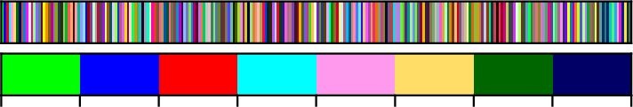
categorical |
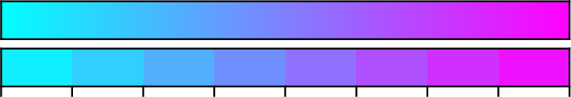
cool |
copper |
cubhelix |
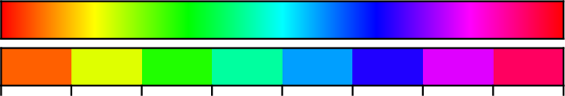
cyclic |
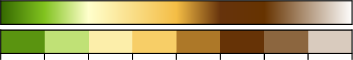
dem1 |
dem2 |
dem3 |
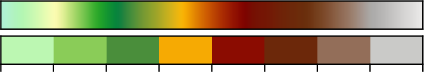
dem4 |
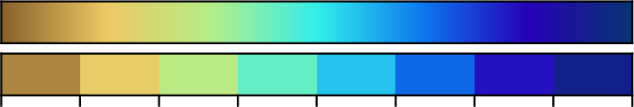
drywet |
earth |
elevation |
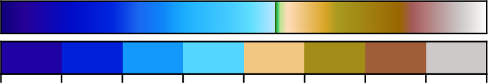
etopo1 |
gebco |
geo |
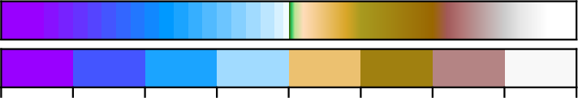
globe |
gray |
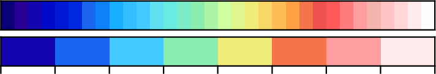
haxby |
hot |
ibcso |
inferno |
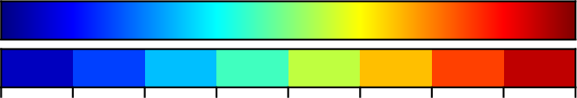
jet |
magma |
nighttime |
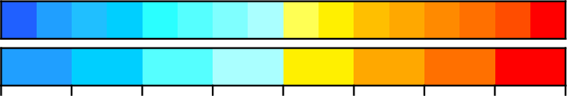
no_green |
ocean |
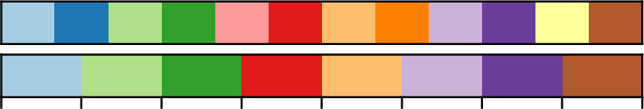
paired |
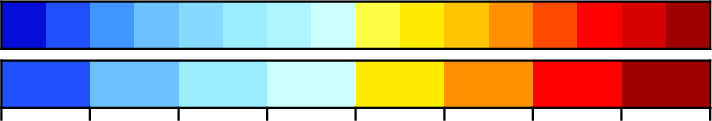
panoply |
plasma |
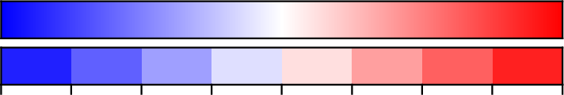
polar |
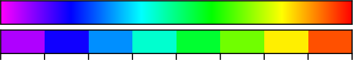
rainbow |
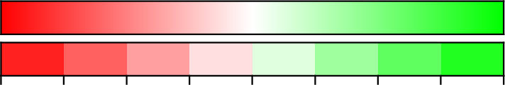
red2green |
relief |
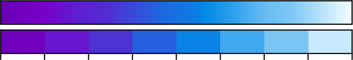
seafloor |
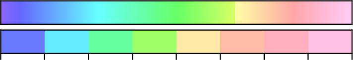
sealand |
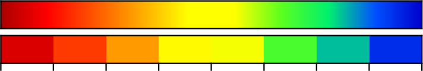
seis |
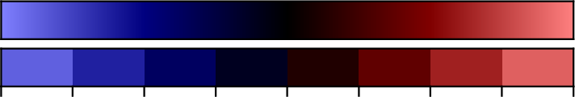
split |
terra |
topo |
viridis |
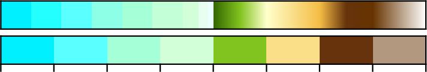
world |

wysiwyg |
GMT内置CPT文件中，某些是针对特定的需求设计的，因而常用于特定的图件中：
- 海深：abyss、bathy、gebco、ibcso
- 陆地高程：elevation
- 全球地形起伏：dem1、dem2、dem3、dem4、earth、etopo1、geo、globe、oleron relief、terra、topo、world
- 地震成像：seis、polar
- 分类型数据：categorical